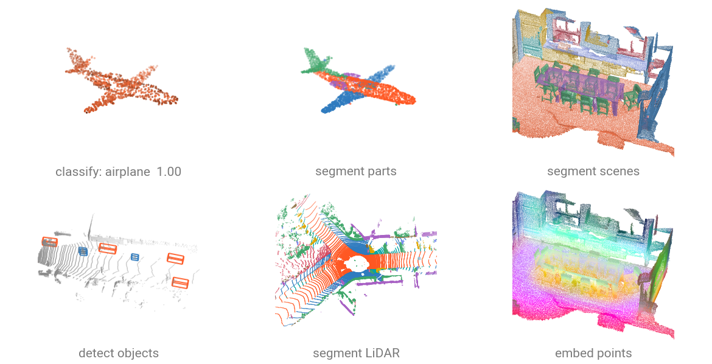

Models¶
torch-pointcloud ships architectures for point cloud classification, semantic and part segmentation, object detection and self-supervised pretraining. Models are registered using a single factory inspired by
timm, making it easy to switch between backbones and/or customize heads for downstream tasks.
import torch_pointcloud as tp
model = tp.create_model(
"pointnext-sm.scanobjectnn-hardest.openpoints",
task="classification",
pretrained=True,
)
Browse available checkpoints with:
import torch_pointcloud as tp
models = tp.list_models(task="classification")
# or task="segmentation", "detection", ...
Weights are downloaded from the Hugging Face Hub on first use and cached under ~/.cache/torch-pointcloud/models.
Set TORCH_POINTCLOUD_MODELS_DIR (or TORCH_POINTCLOUD_CACHE_DIR for the whole cache) to store them elsewhere.
Licenses
Each checkpoint keeps the license of its source, listed in the tables of the task pages, and a few are restricted to
non-commercial use. Most were trained on research-only datasets, whose terms also apply to the weights. See
THIRD_PARTY_NOTICES.md.

Tasks¶
-
One label per cloud: run, evaluate and fine-tune a classifier.
-
One label per point: voxelization, full-resolution predictions, mIoU.
-
Category-conditioned part labels and the ShapeNetPart protocol.
-
Oriented boxes: decode, filter with NMS, score with mAP.
-
The representation under the head: embeddings, retrieval, PCA.
Classification¶
Best for shape classification (ModelNet40, ScanObjectNN, ShapeNet objects). Inputs are single object scans, outputs are scene-level class predictions.
Segmentation¶
Best for dense per-point labeling (S3DIS, ScanNet, SemanticKITTI). Inputs are large scenes, outputs are per-point class predictions.
Detection¶
Predict 3D bounding boxes for indoor scenes (ScanNet, SUN RGB-D) or driving scenes (KITTI, nuScenes, Waymo).
| Model | Paper | Benchmark |
|---|---|---|
| VoteNet | Deep Hough Voting for 3D Object Detection in Point Clouds | ScanNet mAP@25: 57.65 / 58.6 |
| 3DETR | An End-to-End Transformer Model for 3D Object Detection | SunRGBD mAP@25: 58.08 / 58.0 |
| PointPillars | PointPillars: Fast Encoders for Object Detection from Point Clouds | KITTI mod. mAP: 64.16 / 64.08 |
| SECOND | SECOND: Sparsely Embedded Convolutional Detection | KITTI mod. mAP: 66.26 / 66.25 |
| PointRCNN | PointRCNN: 3D Object Proposal Generation and Detection from Point Cloud | KITTI mod. mAP: 69.29 / 68.41 |
| VoxelNeXt | VoxelNeXt: Fully Sparse VoxelNet for 3D Object Detection and Tracking | nuScenes mAP: 61.20 / 60.5 |
| Voxel-Mamba | Voxel Mamba: Group-Free State Space Models for Point Cloud based 3D Object Detection | – |
| LION | LION: Linear Group RNN for 3D Object Detection in Point Clouds | nuScenes mAP: 68.78 / 68.0 |
Self-supervised pretraining¶
Backbones pretrained without labels, registered with task="base"; the fine-tuned classification / segmentation heads are registered under their downstream task.
| Model | Paper | Benchmark |
|---|---|---|
| Point-MAE | Masked Autoencoders for Point Cloud Self-supervised Learning | ModelNet40 OA: 93.35 / 94.04 |
| Point-BERT | Point-BERT: Pre-training 3D Point Cloud Transformers with Masked Point Modeling | ModelNet40 OA: 93.07 / 93.19 |
| Point-M2AE | Point-M2AE: Multi-scale Masked Autoencoders for Hierarchical Point Cloud Pre-training | ModelNet40 OA: 92.87 / 93.43 |
| PointGPT | PointGPT: Auto-regressively Generative Pre-training from Point Clouds | ModelNet40 OA: 94.37 / 94.4 |
| PointMamba | PointMamba: A Simple State Space Model for Point Cloud Analysis | ModelNet40 OA: 93.64 / 93.6 |
| Sonata | Sonata: Self-Supervised Learning of Reliable Point Representations | ScanNet20 lin. mIoU: 72.60 / 72.5 |
| Concerto | Concerto: Joint 2D-3D Self-Supervised Learning Emerges Spatial Representations | ScanNet20 lin. mIoU: 78.59 / 77.5 |
| Utonia | Utonia: Toward One Encoder for All Point Clouds | ScanNet20 lin. mIoU: 77.70 / 77.7 |